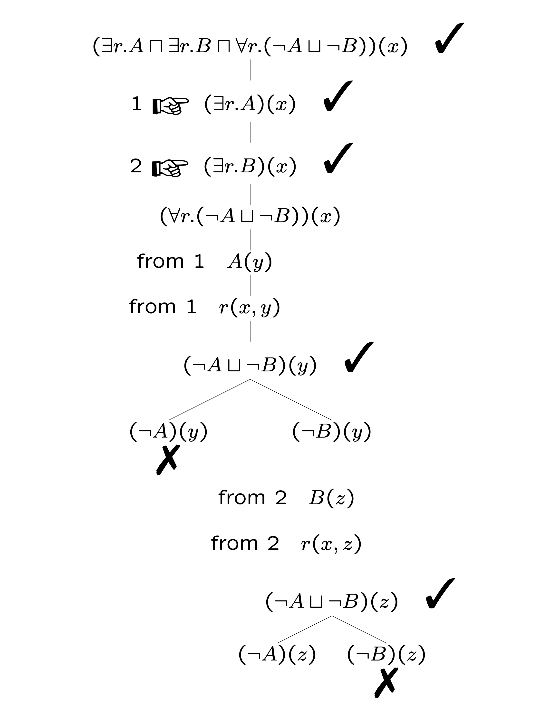

Reasoning in Description Logic (DL)
Learning outcomes:
After completing this lesson you should be able to:
- Put a subsumption assertion into the appropriate format for tableau reasoning.
- Use the \(\exists\) rule in tableau reasoning for description logic
- Use the \(\forall\) rule in tableau reasoning for description logic
- Interpret the outcome of a completed tableau for description logic.
We approach this through the example of Tableau Reasoning, building on our experience of this method for first order logic.
\(\def\E{\exists} \def\A{\forall} \def\geq{\geqslant} \def\tru{\texttt{true}} \def\fls{\texttt{false}} \newcommand{\ul}[1]{\underline{#1}} \def\t{\text{\normalfont\sffamily T}} \def\f{\text{\normalfont\sffamily F}} \newcommand{\m}[4]{{\left[ \begin{array}{rr}#1 & #2 #3 & #4\end{array} \right]} } \newcommand{\cv}[2]{{\left[ \begin{array}{r}#1 #2 \end{array} \right]} } \def\R{\mathbb{R}} \def\N{\mathbb{N}} \def\Z{\mathbb{Z}} \def\Q{\mathbb{Q}} \def\emptyset{\varnothing} \def\iff{\leftrightarrow} \def\blank{ } \def\tick{{\makebox[0in][l]{\hspace{1em}\color{green}{\checkmark}}}} \newcommand{\close}[1]{\begin{array}{c}#1\\{\color{red}{\times}}\end{array}} \newcommand{\nodelab}[1]{\makebox[0in][l]{\hspace{1em}\color{blue}{#1}}} \newcommand{\leftlab}[1]{\makebox[0in][r]{\color{blue}{#1}\hspace{1em}}}\)
4.1. Reasoning tasks
Given some concepts, roles, and individuals specified by a TBox and an ABox we have the idea of an interpretation, \(\mathcal{I}\). This is essentially the same idea as in first order logic. The word model is often used for an interpretation.
This is a set (domain) \(\Delta^\mathcal{I}\), and for each concept \(C\), a set \(C^{\mathcal{I}} \subseteq \Delta^\mathcal{I}\), and for each role a binary relation on \(\Delta^\mathcal{I}\), and elements of \(\Delta^\mathcal{I}\) for each individual, subject to the TBox and ABox assertions.
It is possible that \(C^{\mathcal{I}}\) is empty for some concepts.
The two key reasoning tasks are to:
- Test for subsumption between two concepts, and to,
- Test for satisfiability of a concept.
4.1.1. Subsumption
For concepts \(A\) and \(B\) (with T-Box axioms \(\mathcal{T}\)) we say that
\(A\) is subsumed by \(B\), or that \(B\) subsumes \(A\), and write \(A \sqsubseteq B\)
if for every model \(\mathcal{I}\) of \(\mathcal{T}\) we have \(A^{\mathcal{I}} \subseteq B^\mathcal{I}\)
If \(A \sqsubseteq B\) then \(B\) is a more general concept than \(A\).
For example: we would want that \(\mathsf{Mother}\) subsumes \(\mathsf{Grandmother}\) because every grandmother must be a mother.
4.1.2. Satisfiability
A concept \(A\) is said to be satisfiable if there is a model \(\mathcal{I}\) in which \(A^\mathcal{I}\) is non-empty.
The concept is unsatisfiable when \(A^\mathcal{I}\) is empty in every model.
We can use a type of tableau method to show that a concept is unsatisfiable.
This gives us a means of testing for subsumption:
4.2. Tableau method in description logic
The rules for building a tableau assume we have concept descriptions in Negation Normal Form (NNF).
4.2.1. Negation normal form (NNF)
To get concept descriptions into Negation Normal Form (NNF) we apply transformations to concept descriptions:
Replace \(\neg (\alpha \sqcup \beta)\) by \(\neg \alpha \sqcap \neg \beta\), and replace \(\neg (\alpha \sqcap \beta)\) by \(\neg \alpha \sqcup \neg \beta\)
Replace \(\neg \E r.\alpha\) by \(\A r.\neg \alpha\), and replace \(\neg \A r.\alpha\) by \(\E r.\neg \alpha\)
Replace \(\neg \neg \alpha\) by \(\alpha\)
The \(\alpha\) and \(\beta\) can be any concept descriptions, not just concept names.
4.2.2. General idea
General idea is just as we saw earlier. You construct a tree in stages and continue until no further development is possible. Paths may become closed and if all paths close then the concept you started with is unsatisfiable.
The nodes in the tree either:
- Have the form \(\alpha (x)\) where \(\alpha\) is a concept description and \(x\) is an individual name,
or
- Have the form \(r(x,y)\) where \(r\) is a role name and \(x\) and \(y\) are individual names.
The assertion \(\alpha (x)\) means that \(x\) satisfies \(\alpha\), and \(r(x,y)\) means that \(x\) stands in the relation \(r\) to \(y\).
Each path that we construct by building the tree is a part of a possible model.
A path becomes closed when it contains both \(A(x)\) and \(\neg A(x)\) for some concept name \(A\). This means that particular attempt to build a model has to be abandoned.
To show that a concept description \(\alpha\) is satisfiable, we start with a node \(\alpha (x)\) and develop a tree using the rules.
The \(x\) in \(\alpha (x)\) is not a variable; it is a name for an individual in the model that we are building. We assume that we can always generate new individuals to take part in the model.
To show \(A \sqsubseteq B\) we start with the assertion \((A \sqcap \neg B)(x)\).
4.2.3. The rules
For practical reasons we would not add nodes to a path if it duplicates information that is already present.
4.3. Examples
4.3.1. Example 1
In this example the tableau method is used to see if: \(\E r.A \sqcap \E r.B \sqsubseteq \E r.(A \sqcap B)\).
Concept names: House, School, Station.
Role name: closeTo
Consider these two attempts to describe the concept of a house close to a school and a station. Are they the same?
\(\mathsf{House} \sqcap \E \mathsf{closeTo}.(\mathsf{School} \sqcap \mathsf{Station})\)
\(\mathsf{House} \sqcap \E \mathsf{closeTo}.\mathsf{School} \sqcap \E \mathsf{closeTo}.\mathsf{Station}\)

Fig 4.4.1.
Select for full text description of screenshot 4.4.1.
Full text description to follow.
\(\E r.A \sqcap \E r.B\) is not subsumed by \(\E r.(A \sqcap B)\) because \(\E r.A \sqcap \E r.B \sqcap \neg (\E r.(A \sqcap B))\) is satisfiable
4.3.2. Example 2
In Lesson 3 of this unit we met this quotation:
'Have nothing in your house that you do not know to be useful, or believe to be beautiful'
Which of these concepts matches a house satisfying the quotation (the role inHouse relates a house to something in the house)?
\(\qquad \A\, \text{inHouse}.(\text{Useful} \sqcup \text{Beautiful})\)
\(\qquad \A\, \text{inHouse}.\text{Useful} \sqcup \A\, \text{inHouse}.\text{Beautiful}\)
In this example the tableau method is used to investigate this statement:
- \(\A r.(A \sqcup B) \sqsubseteq \A r.A \sqcup \A r.B\)
After reducing to negation normal form, we continue:
-
Start the tree with
\(((\A r . (A \sqcup B)) \sqcap (\E r . \neg A) \sqcap (\E r . \neg B))(x)\)
-
Using the \(\sqcap\) rule more than once gives three things to add to the one path:
- \((\A r . (A \sqcup B))(x)\)
- \((\E r. \neg A)(x)\)
- \((\E r. \neg B)(x)\)
-
There are two opportunities to apply the \(\E\) rule, so we introduce two new individuals \(y\) and \(z\) and add these to the path:
- \(r(x,y)\)
- \(\neg A (y)\)
- \(r(x,z)\)
- \(\neg B (z)\)
-
We now use the \(\A\) rule with each of \(y\) and \(z\) to get these:
- \((A \sqcup B)(y)\)
- \((A \sqcup B)(z)\)
-
At this point the tree branches:
- One branch has \(A(y)\), but we can close this immediately as we have \(\neg A (y)\)
-
The other branch has \(B(y)\). This branch splits again:
- One branch has \(B(z)\), but we can close this immediately as we have \(\neg B (z)\)
- The other branch has \(A(z)\).
-
Nothing further is possible. We conclude that the concept at the start is satisfiable. The model that can be read off the tree has three individuals with \(x\) related by \(r\) to both \(y\) and \(z\). The individual \(y\) is an instance of the concept \(\neg A \sqcap B\), whereas \(z\) is an instance of the concept \(A \sqcap \neg B\).
Exercise
A further example is left as an exercise for you:
\(\A r.A \sqcup \A r.B \sqsubseteq \A r.(A \sqcup B)\)
You should be able to show that the subsumption does indeed hold.
4.3.3. Example 3
We can make these definitions:
\(\qquad \text{Parent} \equiv \E\, \text{hasChild}.\top\)
\(\qquad \text{GrandParent} \equiv \E\, \text{hasChild}.\text{Parent}\)
In this example the tableau method is used to show that: \(\text{GrandParent} \sqsubseteq \text{Parent}\).
The steps are described next. You should draw the tree yourself as you go through these.
-
To simplify notation, just write \(r\) instead of \(\mathsf{hasChild}\).
-
We need to show that \(\E r. (\E r. \top) \sqcap \neg \E r.\top\) is unsatisfiable.
-
We start the tree with \((\E r. (\E r. \top) \sqcap \A r.\bot) (x)\).
-
Using the rule for \(\sqcap\) we add two things to the path:
- \((\exists r . ( \exists r . \top )) (x)\)
- \((\forall r . \top) (x)\)
-
Using the rule for \(\exists\), we introduce a new individual \(y\) and add two more things to the path:
- \(( \exists r . \top ) (x)\)
- \(r(x,y)\)
-
Now, using the \(\forall\) rule we get \(\bot (y)\).
-
As \(\bot\) is the empty concept, a path with \(\bot (y)\) must be closed.
-
There was only one path, so we conclude that the concept at the start is unsatisfiable. In other words, it is impossible to have a grandparent who is not a parent.
4.3.4. Example 4
Of course, being a parent does not imply being a grandparent, but can the reasoning method detect this?
What happens if we investigate \(\E r.\top \sqsubseteq \E r. (\E r. \top)\)?
You should draw your own tree as you follow these steps.
-
We start with \((\E r.\top \sqcap \A r.(\A r.\bot))(x)\)
-
Using the \(\sqcap\) rule we add these to the one path:
- \((\E r.\top)(x)\)
- \((\A r.(\A r.\bot))(x)\)
-
Using the \(\exists\) rule we get two more things to add about a new individual, \(y\).
-
\(r(x,y)\)
-
\(\top (y)\)
-
-
Now, using the \(\forall\) rule we get \((\A r.\bot)(y)\), which means for our example that \(y\) has no children.
-
No further applications of rules are possible, and we see that the starting concept is satisfiable. The method has constructed a model where \(x\) has child \(y\), and \(y\) has no children.